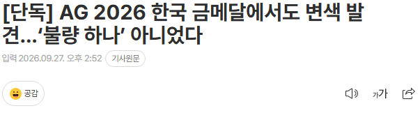
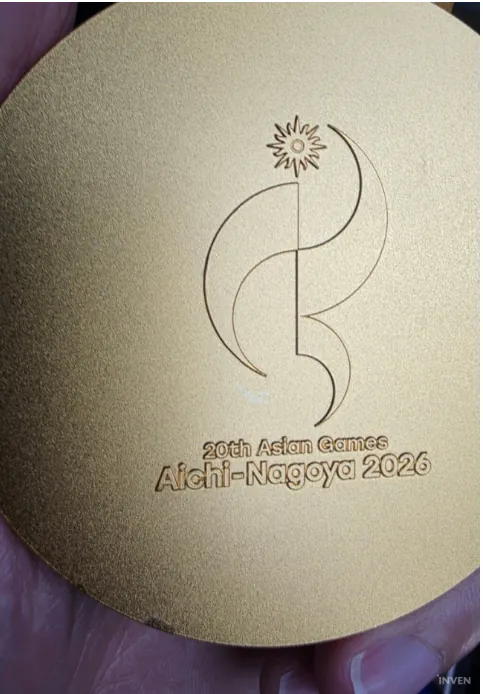
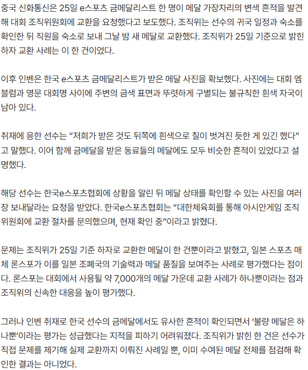

잼버리에 라이벌의식이라도 느꼈나 ㅅㅂㅋㅋ 일처리 ㅈ같이하네 진짜 ㅋㅋㅋ



잼버리에 라이벌의식이라도 느꼈나 ㅅㅂㅋㅋ 일처리 ㅈ같이하네 진짜 ㅋㅋㅋ
JAP버리
japan technology
쌀먹적당히하라고!
동조선 서조선... 내선일체가 아니고,
일본도ㅠ이제 음습해진거냐옹~~?
쟤네도 아시안게임 유치한 이유가 지방홍보, 국가 이미지개선 이딴게 아니라 자기네 지역 인프라 예산 땡겨올라고 유치한거라. 모노레일 같은데 예산에 다 박고 남는 짜투리로 아시안 게임 예산 편성했다더라.
이젠 금도 삥땅친거임?
저번에도 그랬었지 않나
파리올림픽이 찐빠터진적 있었지
와 일본 국격이 떨어지네 ㅋㅋ